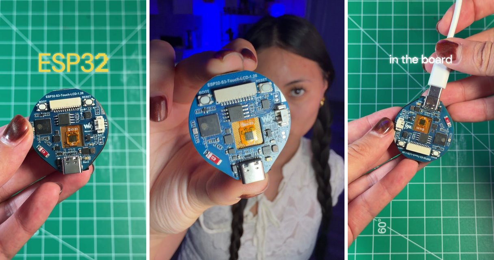
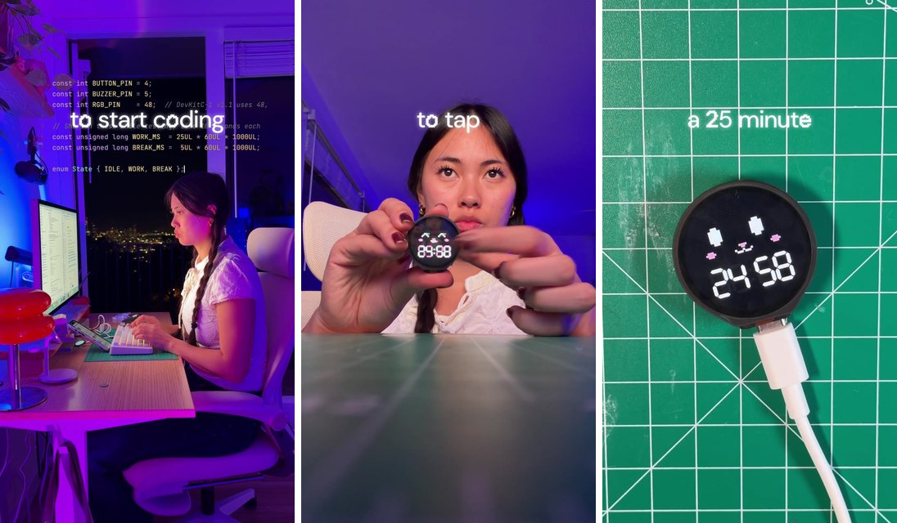
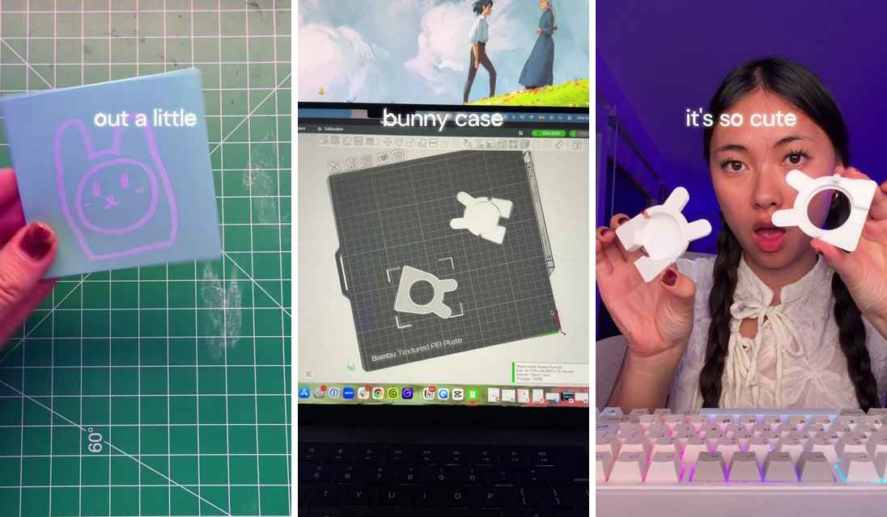
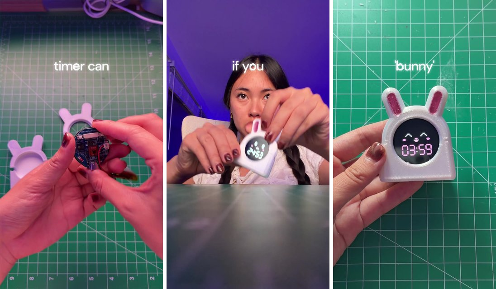

Tự làm đồng hồ Pomodoro hình thỏ bằng ESP32: hướng dẫn từng bước
Ba chế độ đọc: dùng 3 nút tròn ở góc dưới bên phải để chuyển nhanh (trên điện thoại, ba nút nằm thành một thanh ở cuối màn hình để không đè chữ bên phải). VI — bản dịch tiếng Việt đầy đủ, theo từng đoạn. EN — nguyên văn tiếng Anh, không tách cụm. Cụm (mặc định, biểu tượng A gạch dưới) — tiếng Anh tách thành các cụm theo mệnh đề; rê chuột hoặc chạm vào một cụm để xem nghĩa tiếng Việt. Chạm lần nữa hoặc chạm ra ngoài để đóng; với cụm chứa liên kết, trên điện thoại chạm lần đầu để xem nghĩa, chạm lần hai để mở liên kết. Chế độ được ghi nhớ trên máy này; có thể mở thẳng bằng ?mode=vi, ?mode=en hoặc ?mode=chunk. Ở chế độ Cụm, ô “Gạch chân nhẹ các cụm” vẫn dùng được. Đây là bài hướng dẫn tổng hợp, không phải bản dịch nguyên văn (phần tiếng Anh do người viết soạn). Hình ảnh trích từ video của tác giả, đăng vì mục đích học tập phi thương mại có ghi công; hình minh họa luồng làm việc do người viết vẽ.

TL;DR
- Món đồ: đồng hồ Pomodoro 25 phút hình thỏ chạy trên bo Waveshare ESP32-S3-Touch-LCD-1.28 (màn hình tròn 1,28 inch cảm ứng), lập trình bằng Arduino IDE, đặt trong vỏ thỏ in 3D.
- Các bước: cắm bo vào máy → cài Arduino IDE với core esp32 2.0.12 và Board ESP32S3 Dev Module (flash 16 MB, PSRAM QSPI) → chạy demo Waveshare → viết máy trạng thái IDLE → WORK (25 phút) → BREAK (5 phút) bắt đầu bằng một lần chạm → in vỏ → gắn pin Li 3,7 V.
- Video chỉ chiếu một đoạn mã rất ngắn; mã đầy đủ và cách vẽ mặt thỏ không công khai. Sketch trong bài là của người viết, đã biên dịch thành công nhưng chưa chạy trên bo thật.
- Tránh bẫy: không chép số chân GPIO trong đoạn mã hiện trong video (khác sơ đồ bo); đặt hẹn giờ 10 giây khi thử; kiểm tra cực pin; khâu mô hình hóa vỏ không được video nói rõ.
Đây là dự án gì
What this build is
What this build is
Sarah Li (@sarahli) đăng một video dài 36 giây về món đồ để bàn do chính cô tự làm: chiếc đồng hồ Pomodoro hình thỏ. Bạn chạm vào màn hình tròn là đồng hồ bắt đầu đếm ngược 25 phút, còn bo mạch nằm gọn trong vỏ thỏ in 3D. Cô cho biết video đạt 1 triệu lượt xem trên Instagram, và ai bình luận chữ “bunny” sẽ được gửi riêng bản hướng dẫn.
Sarah Li (@sarahli) posted a 36-second video of a desk gadget she built: a bunny-shaped Pomodoro timer. You tap the round screen, a 25-minute countdown starts, and a 3D-printed bunny case holds the board. She says the video reached 1 million views on Instagram, and that people who comment “bunny” get a guide in reply.
Sarah Li (@sarahli) posted a 36-second video of a desk gadget she built: a bunny-shaped Pomodoro timer. You tap the round screen, a 25-minute countdown starts, and a 3D-printed bunny case holds the board. She says the video reached 1 million views on Instagram, and that people who comment “bunny” get a guide in reply.
Bản hướng dẫn đó được gửi riêng tư nên không công khai. Bài viết này là hướng dẫn dựng lại từ ba nguồn kiểm chứng được: những gì video hiển thị và mô tả, wiki cùng mã demo chính thức của Waveshare cho đúng bo mạch trong video, và tài liệu của Arduino lẫn Espressif. Phần nào do người viết tự bổ sung đều có ghi chú rõ ràng.
That guide is sent privately, so it is not public. This post is a how-to rebuilt from three things we can check: what the video shows and says, Waveshare’s official wiki and demo code for the board in the video, and the Arduino and Espressif documentation. Anything that is our own addition is labelled.
That guide is sent privately, so it is not public. This post is a how-to rebuilt from three things we can check: what the video shows and says, Waveshare’s official wiki and demo code for the board in the video, and the Arduino and Espressif documentation. Anything that is our own addition is labelled.

1. Cần chuẩn bị gì
1. What you need
1. What you need
Dựa theo video và tài liệu của Waveshare, danh sách linh kiện khá gọn nhẹ:
From the video and Waveshare’s documentation, the parts list is short:
From the video and Waveshare’s documentation, the parts list is short:
- Bo mạch: video cho thấy một bo mạch có chữ in lụa
ESP32-S3-Touch-LCD-1.28. Đây là bo của Waveshare tích hợp màn hình tròn 1,28 inch cảm ứng điện dung (240×240, chip hiển thị GC9A01A, chip cảm ứng CST816S), vi điều khiển ESP32-S3R2 có Wi-Fi và Bluetooth 5 (BLE), flash 16 MB, PSRAM 2 MB và cảm biến chuyển động QMI8658. Waveshare cũng bán bản không cảm ứng, nên hãy chọn đúng bản Touch.The board: the video shows a board whose silkscreen readsESP32-S3-Touch-LCD-1.28. It is a Waveshare board with a 1.28-inch round capacitive touch screen (240×240, GC9A01A display, CST816S touch), an ESP32-S3R2 chip with Wi-Fi and Bluetooth 5 (BLE), 16 MB flash and 2 MB PSRAM, and a QMI8658 motion sensor. Waveshare also sells a non-touch version, so buy the Touch one.The board: the video shows a board whose silkscreen readsESP32-S3-Touch-LCD-1.28. It is a Waveshare board with a 1.28-inch round capacitive touch screen (240×240, GC9A01A display, CST816S touch), an ESP32-S3R2 chip with Wi-Fi and Bluetooth 5 (BLE), 16 MB flash and 2 MB PSRAM, and a QMI8658 motion sensor. Waveshare also sells a non-touch version, so buy the Touch one. - Cáp USB-C truyền dữ liệu để kết nối bo với máy tính (video cho thấy một sợi cáp trắng).A USB-C data cable to connect it to your computer (the video shows a white cable).A USB-C data cable to connect it to your computer (the video shows a white cable).
- Pin lithium 3,7 V để đồng hồ hoạt động không cần cắm dây. Bo của Waveshare có cổng pin MX1.25 2 chân hỗ trợ cả sạc và xả; video chỉ gọi là “this little battery” chứ không nêu mã pin cụ thể.A 3.7 V lithium battery so the timer works unplugged. Waveshare’s board has a 2-pin MX1.25 battery connector that supports charging and discharging; the video only calls it “this little battery” and gives no model.A 3.7 V lithium battery so the timer works unplugged. Waveshare’s board has a 2-pin MX1.25 battery connector that supports charging and discharging; the video only calls it “this little battery” and gives no model.
- Máy in 3D (hoặc dịch vụ in) cùng sợi nhựa in cho chiếc vỏ thỏ hai mảnh. Phần mềm slicer trong video hiển thị “Bambu Textured PEI Plate”, gợi ý máy in của Bambu Lab, nhưng cô không nói rõ model nào.A 3D printer (or a print service) and filament for the two-part bunny case. The slicer on screen shows a “Bambu Textured PEI Plate”, which suggests a Bambu Lab printer, but she does not say which one.A 3D printer (or a print service) and filament for the two-part bunny case. The slicer on screen shows a “Bambu Textured PEI Plate”, which suggests a Bambu Lab printer, but she does not say which one.
- Máy tính cài sẵn Arduino IDE miễn phí.A computer with the free Arduino IDE.A computer with the free Arduino IDE.
Video không nêu chi phí, thời gian in hay tổng thời gian hoàn thiện. Một bình luận dưới bài nói việc in vỏ có thể mất vài giờ, nhưng đó là nhận xét của người xem chứ không phải số liệu từ tác giả.
The video does not state prices, print time, or total build time. One reply under the post says printing the shell can take several hours, but that is a commenter’s remark, not the author’s figure.
The video does not state prices, print time, or total build time. One reply under the post says printing the shell can take several hours, but that is a commenter’s remark, not the author’s figure.
2. Làm quen với bo mạch
2. Meet the board
2. Meet the board

Trong video cô nói: “This is an ESP32. It’s basically a tiny computer you can program. I started by plugging in the board to my computer.” (Đây là ESP32 — về cơ bản là một máy tính tí hon bạn có thể lập trình. Tôi bắt đầu bằng việc cắm bo vào máy tính.) Có ba chi tiết trong wiki Waveshare rất quan trọng cho dự án:
In the video she says: “This is an ESP32. It’s basically a tiny computer you can program. I started by plugging in the board to my computer.” Three details from Waveshare’s wiki matter for the build:
In the video she says: “This is an ESP32. It’s basically a tiny computer you can program. I started by plugging in the board to my computer.” Three details from Waveshare’s wiki matter for the build:
- Cổng USB-C đi qua chip chuyển đổi USB sang UART CH343P, nên bạn nạp firmware và đọc log qua cùng một sợi cáp.The USB-C port goes through a CH343P USB-to-serial chip, so you flash firmware and read logs over the same cable.The USB-C port goes through a CH343P USB-to-serial chip, so you flash firmware and read logs over the same cable.
- Để vào chế độ nạp (download mode) thủ công, hãy giữ nút BOOT trước khi nhấn RESET.To enter download mode manually, press BOOT before RESET.To enter download mode manually, press BOOT before RESET.
- Cảm ứng giao tiếp qua I2C (SDA = GPIO6, SCL = GPIO7, reset = GPIO13, ngắt = GPIO5). Đèn nền dùng GPIO2. GPIO4 và GPIO5 còn nối với hai MOSFET đóng ngắt nhỏ (ví dụ để chạy động cơ rung), và GPIO1 dùng để đo điện áp pin.Touch uses I2C (SDA = GPIO6, SCL = GPIO7, reset = GPIO13, interrupt = GPIO5). The backlight is GPIO2. GPIO4 and GPIO5 are also tied to two small MOSFET switches (for a vibration motor, for example), and GPIO1 reads the battery voltage.Touch uses I2C (SDA = GPIO6, SCL = GPIO7, reset = GPIO13, interrupt = GPIO5). The backlight is GPIO2. GPIO4 and GPIO5 are also tied to two small MOSFET switches (for a vibration motor, for example), and GPIO1 reads the battery voltage.
3. Cài Arduino IDE
3. Set up Arduino IDE
3. Set up Arduino IDE
Trong video cô mở Arduino IDE để viết mã cho bộ hẹn giờ. Waveshare hướng dẫn cấu hình chính xác cho bo mạch này như sau:
In the video she opens Arduino IDE to write the timer. Waveshare lists the exact setup for this board:
In the video she opens Arduino IDE to write the timer. Waveshare lists the exact setup for this board:
- Tải và cài đặt Arduino IDE với các tùy chọn mặc định.Download and install Arduino IDE with default options.Download and install Arduino IDE with default options.
- Trong Boards Manager, cài gói “esp32 by Espressif Systems”, phiên bản 2.0.12. Waveshare yêu cầu đúng phiên bản này và lưu ý nếu demo báo lỗi thì trước tiên hãy kiểm tra gói bo mạch có đúng 2.0.12 hay không (xem thêm hướng dẫn cài đặt của Espressif).In Boards Manager install “esp32 by Espressif Systems”, version 2.0.12. Waveshare says to use this exact version and says that if a demo errors, first check that the board package is 2.0.12 (see also the Espressif install guide).In Boards Manager install “esp32 by Espressif Systems”, version 2.0.12. Waveshare says to use this exact version and says that if a demo errors, first check that the board package is 2.0.12 (see also the Espressif install guide).
- Cắm bo vào máy, rồi trong menu Tools chọn Board ESP32S3 Dev Module cùng cổng COM tương ứng.Plug in the board, then under Tools choose Board ESP32S3 Dev Module and the board’s COM port.Plug in the board, then under Tools choose Board ESP32S3 Dev Module and the board’s COM port.
- Thiết lập ba thông số mà Waveshare nhấn mạnh: Flash Size 16MB (128Mb), Partition Scheme 16M Flash (3MB APP/9.9MB FATFS), PSRAM QSPI PSRAM. Mã demo cấp phát bộ đệm màn hình trong PSRAM, nên nếu tắt PSRAM chương trình sẽ bị lỗi.Set the three options Waveshare highlights: Flash Size 16MB (128Mb), Partition Scheme 16M Flash (3MB APP/9.9MB FATFS), PSRAM QSPI PSRAM. The demo code allocates its screen buffer in PSRAM, so leaving PSRAM off will break it.Set the three options Waveshare highlights: Flash Size 16MB (128Mb), Partition Scheme 16M Flash (3MB APP/9.9MB FATFS), PSRAM QSPI PSRAM. The demo code allocates its screen buffer in PSRAM, so leaving PSRAM off will break it.
- Trên Windows, kiểm tra cổng COM trong Device Manager; trên Mac, Waveshare khuyên cài driver CH34x nếu gặp lỗi khi nạp.On Windows you can find the COM port in Device Manager; on Mac, Waveshare says to install the CH34x driver if flashing fails.On Windows you can find the COM port in Device Manager; on Mac, Waveshare says to install the CH34x driver if flashing fails.
Kiểm tra bộ công cụ bằng bài thử đầu tiên của chính Waveshare. Tạo một sketch mới, nạp lên bo, rồi mở Serial Monitor ở tốc độ 115200 baud; bạn sẽ thấy một dòng chữ hiện ra mỗi 2 giây. Lần biên dịch đầu tiên thường khá chậm, Waveshare cho biết đó là bình thường.
Check the toolchain with Waveshare’s own first test. Create a new sketch, upload it, and open the Serial Monitor at 115200 baud; you should see a line every 2 seconds. The first compile is slow, which Waveshare says is normal.
Check the toolchain with Waveshare’s own first test. Create a new sketch, upload it, and open the Serial Monitor at 115200 baud; you should see a line every 2 seconds. The first compile is slow, which Waveshare says is normal.
void setup() {
Serial.begin(115200);
}
void loop() {
Serial.println("Hello, World!");
delay(2000);
}4. Chạy demo của Waveshare trước
4. Run Waveshare’s demo first
4. Run Waveshare’s demo first
Trước khi tự viết bộ hẹn giờ, hãy đảm bảo màn hình, cảm ứng và mạch đọc pin đều hoạt động. Tải ESP32-S3-Touch-LCD-1.28-Demo.zip từ wiki Waveshare (khoảng 46 MB), mở thư mục Arduino/examples/ESP32-S3-Touch-LCD-1.28-Test rồi nạp lên bo với các thiết lập vừa cấu hình.
Before writing your own timer, make sure the screen, touch and battery reading work. Download ESP32-S3-Touch-LCD-1.28-Demo.zip from the Waveshare wiki (about 46 MB), open Arduino/examples/ESP32-S3-Touch-LCD-1.28-Test and upload it with the settings above.
Before writing your own timer, make sure the screen, touch and battery reading work. Download ESP32-S3-Touch-LCD-1.28-Demo.zip from the Waveshare wiki (about 46 MB), open Arduino/examples/ESP32-S3-Touch-LCD-1.28-Test and upload it with the settings above.
Theo Waveshare, bài thử sẽ hiển thị lần lượt các màu trắng, đỏ, xanh lá, xanh dương mỗi màu 2 giây (để phát hiện điểm ảnh chết), tiếp đến là thông số cảm biến chuyển động (ACC và GYR) cùng điện áp pin (BAT(V)), rồi sang phần thử cảm ứng: chạm vào vùng trắng sẽ vẽ các chấm. Nhấn giữ vùng đỏ phía trên để thoát trang cảm biến.
According to Waveshare, the test shows white, red, green and blue for 2 seconds each (to spot dead pixels), then the motion-sensor values (ACC and GYR) and the battery voltage (BAT(V)), then a touch test where tapping the white area draws dots. Long-pressing the red area at the top ends the sensor page.
According to Waveshare, the test shows white, red, green and blue for 2 seconds each (to spot dead pixels), then the motion-sensor values (ACC and GYR) and the battery voltage (BAT(V)), then a touch test where tapping the white area draws dots. Long-pressing the red area at the top ends the sensor page.
Thư mục demo này cũng chính là bộ thư viện nền tảng của bạn: bên trong chứa driver màn hình (LCD_1in28), các hàm vẽ (GUI_Paint, phông chữ), driver cảm ứng (CST816S) và phần khai báo chân (DEV_Config) mà đoạn mã hẹn giờ bên dưới sẽ dùng lại.
This demo folder is also your starting library: it contains the display driver (LCD_1in28), the drawing helpers (GUI_Paint, fonts), the touch driver (CST816S) and the pin setup (DEV_Config) that the timer below reuses.
This demo folder is also your starting library: it contains the display driver (LCD_1in28), the drawing helpers (GUI_Paint, fonts), the touch driver (CST816S) and the pin setup (DEV_Config) that the timer below reuses.
5. Viết bộ hẹn giờ
5. Write the timer
5. Write the timer

Trong video cô nói: “I want to be able to tap the screen and have it start a 25 minute countdown.” (Tôi muốn chạm vào màn hình là nó bắt đầu đếm ngược 25 phút.) Một vài dòng mã hiện thoáng qua trên màn hình. Đọc từng khung hình, phần nhìn thấy được gồm:
In the video: “I want to be able to tap the screen and have it start a 25 minute countdown.” A few lines of code flash over the footage. Reading them frame by frame, this is what is visible:
In the video: “I want to be able to tap the screen and have it start a 25 minute countdown.” A few lines of code flash over the footage. Reading them frame by frame, this is what is visible:
const int BUTTON_PIN = 4;
const int BUZZER_PIN = 5;
const int RGB_PIN = 48; // DevKitC-1 v1.1 uses 48,
// Shorten these while testing, like 10 seconds each
const unsigned long WORK_MS = 25UL * 60UL * 1000UL;
const unsigned long BREAK_MS = 5UL * 60UL * 1000UL;
enum State { IDLE, WORK, BREAK };Phần mã nhìn thấy được trong video (chép lại từ hình, chỉ là đoạn đầu của chương trình).
Có hai bài học rút ra ở đây. Thứ nhất, thiết kế dựa trên một máy trạng thái đơn giản: IDLE chờ chạm, WORK đếm 25 phút, BREAK đếm 5 phút. Thứ hai, dòng chú thích “shorten these while testing” (rút ngắn khi thử) là lời khuyên rất hay: hãy đặt cả hai xuống khoảng 10 giây trong lúc gỡ lỗi. Nhưng tuyệt đối đừng chép các số chân GPIO kia. Đoạn mã đó nhắc tới bo ESP32-S3-DevKitC-1 có nút bấm, còi báo và đèn LED RGB, tức là sơ đồ chân hoàn toàn khác. Trên bo tròn của Waveshare, GPIO4 và GPIO5 đã được gán cho cảm biến chuyển động, ngắt cảm ứng và hai công tắc MOSFET.
Two lessons here. First, the design is a small state machine: IDLE waits for a tap, WORK counts 25 minutes, BREAK counts 5. Second, the comment “shorten these while testing” is good advice: set both to about 10 seconds while you debug. But do not copy the pin numbers. That snippet mentions an ESP32-S3-DevKitC-1 with a button, a buzzer and an RGB LED, which is a different pin layout. On the Waveshare round board, GPIO4 and GPIO5 are already used by the motion sensor, the touch interrupt and the two MOSFET switches.
Two lessons here. First, the design is a small state machine: IDLE waits for a tap, WORK counts 25 minutes, BREAK counts 5. Second, the comment “shorten these while testing” is good advice: set both to about 10 seconds while you debug. But do not copy the pin numbers. That snippet mentions an ESP32-S3-DevKitC-1 with a button, a buzzer and an RGB LED, which is a different pin layout. On the Waveshare round board, GPIO4 and GPIO5 are already used by the motion sensor, the touch interrupt and the two MOSFET switches.
Phần mã nguồn còn lại của cô không được chiếu lên video, nên sketch bên dưới là do người viết tự soạn cho bo Waveshare dựa theo cách khởi tạo của demo Test (cùng chân cảm ứng, cùng bộ đệm trong PSRAM, cùng hàm vẽ) và cấu trúc IDLE/WORK/BREAK ở trên. Chúng tôi đã biên dịch thử bằng arduino-cli với esp32 core 2.0.12 cùng thiết lập bo ở bước 3 và biên dịch thành công. Chúng tôi chưa chạy thử trên bo thật, nên hãy xem đây là điểm khởi đầu để tham khảo.
The rest of her code is not shown, so the sketch below is our own, written for the Waveshare board by following the Test demo’s own setup (same touch pins, same buffer in PSRAM, same drawing calls) and the IDLE/WORK/BREAK structure above. We compiled it with arduino-cli against esp32 core 2.0.12 with the board settings from step 3, and it built successfully. We have not run it on a physical board, so treat it as a starting point.
The rest of her code is not shown, so the sketch below is our own, written for the Waveshare board by following the Test demo’s own setup (same touch pins, same buffer in PSRAM, same drawing calls) and the IDLE/WORK/BREAK structure above. We compiled it with arduino-cli against esp32 core 2.0.12 with the board settings from step 3, and it built successfully. We have not run it on a physical board, so treat it as a starting point.
// Pomodoro timer for the Waveshare ESP32-S3-Touch-LCD-1.28.
// Built on Waveshare's "ESP32-S3-Touch-LCD-1.28-Test" demo files (DEV_Config, LCD_1in28,
// GUI_Paint, CST816S ...). Put this .ino in a copy of that demo folder, next to those files.
#include <Arduino.h>
#include "LCD_Test.h"
// Shorten these while testing, like 10 seconds each
const unsigned long WORK_MS = 25UL * 60UL * 1000UL;
const unsigned long BREAK_MS = 5UL * 60UL * 1000UL;
enum State { IDLE, WORK, BREAK };
State state = IDLE;
unsigned long phaseStart = 0;
long lastShown = -1;
UWORD *Frame; // 240x240 RGB565 frame buffer in PSRAM
CST816S touch(6, 7, 13, 5); // sda, scl, rst, irq (same as the Waveshare demo)
void drawText(const char *big, const char *small) {
Paint_Clear(BLACK);
Paint_DrawString_EN(120 - strlen(big) * 17 / 2, 100, big, &Font24, BLACK, WHITE); // Font24 is 17 px wide
if (small) Paint_DrawString_EN(120 - strlen(small) * 11 / 2, 135, small, &Font16, BLACK, WHITE); // Font16 is 11 px wide
LCD_1IN28_Display(Frame);
}
void enter(State s) {
state = s;
phaseStart = millis();
lastShown = -1;
if (s == IDLE) drawText("Tap", "to start");
}
void setup() {
Serial.begin(115200);
touch.begin();
psramInit();
Frame = (UWORD *)ps_malloc(LCD_1IN28_HEIGHT * LCD_1IN28_WIDTH * 2);
if (Frame == NULL) { Serial.println("No PSRAM buffer"); while (true) delay(1000); }
DEV_Module_Init();
LCD_1IN28_Init(HORIZONTAL);
Paint_NewImage((UBYTE *)Frame, LCD_1IN28.WIDTH, LCD_1IN28.HEIGHT, 0, BLACK);
Paint_SetScale(65);
Paint_SetRotate(ROTATE_0);
enter(IDLE);
}
void loop() {
bool tapped = touch.available();
if (state == IDLE) {
if (tapped) enter(WORK); // a tap starts the 25-minute countdown
} else {
unsigned long limit = (state == WORK) ? WORK_MS : BREAK_MS;
unsigned long elapsed = millis() - phaseStart;
if (tapped && elapsed > 1000) { // ignore the touch event that started this phase
enter(IDLE); // a tap while running cancels
} else if (elapsed >= limit) {
enter(state == WORK ? BREAK : IDLE); // work -> break -> idle
} else {
long left = (limit - elapsed) / 1000;
if (left != lastShown) { // redraw once per second
lastShown = left;
char buf[8];
snprintf(buf, sizeof(buf), "%02ld:%02ld", left / 60, left % 60);
drawText(buf, state == WORK ? "focus" : "break");
}
}
}
delay(20);
}Sketch BunnyTimer.ino (người viết). Tải về: files/BunnyTimer.ino.
Cách sử dụng: sao chép toàn bộ thư mục ESP32-S3-Touch-LCD-1.28-Test, đổi tên bản sao thành BunnyTimer, xóa tệp .ino gốc bên trong, rồi đặt BunnyTimer.ino vào đó (Arduino yêu cầu tên thư mục và tệp .ino chính phải trùng nhau). Mở lên, áp dụng thiết lập bo ở bước 3, đặt hai khoảng thời gian xuống 10 giây, nạp, chạm màn hình và theo dõi đồng hồ đếm. Khi chạy ổn định thì khôi phục lại 25 và 5 phút.
How to use it: copy the whole ESP32-S3-Touch-LCD-1.28-Test folder, rename the copy to BunnyTimer, delete the original .ino inside, and add BunnyTimer.ino (Arduino requires the folder and the main .ino to share a name). Open it, apply the board settings from step 3, set the two durations to 10 seconds, upload, tap the screen, and watch the count. When it behaves, restore 25 and 5 minutes.
How to use it: copy the whole ESP32-S3-Touch-LCD-1.28-Test folder, rename the copy to BunnyTimer, delete the original .ino inside, and add BunnyTimer.ino (Arduino requires the folder and the main .ino to share a name). Open it, apply the board settings from step 3, set the two durations to 10 seconds, upload, tap the screen, and watch the count. When it behaves, restore 25 and 5 minutes.
Cách sketch hoạt động: chạm khi đang ở IDLE sẽ chuyển sang WORK; hết 25 phút thì chuyển sang BREAK, rồi quay về IDLE; chạm khi đồng hồ đang chạy sẽ hủy về IDLE. Thời gian được đo bằng millis() và màn hình vẽ lại mỗi giây một lần. Các lần chạm trong giây đầu tiên của mỗi pha bị bỏ qua, vì chip cảm ứng có thể gửi ra nhiều sự kiện cho một lần chạm.
How the sketch works: a tap in IDLE starts WORK; when the 25 minutes are up it moves to BREAK, then back to IDLE; a tap while running cancels. The time is measured with millis() and the screen is redrawn once per second. Taps in the first second of a phase are ignored, because the touch chip can raise more than one event for one tap.
How the sketch works: a tap in IDLE starts WORK; when the 25 minutes are up it moves to BREAK, then back to IDLE; a tap while running cancels. The time is measured with millis() and the screen is redrawn once per second. Taps in the first second of a phase are ignored, because the touch chip can raise more than one event for one tap.
Phần đồ họa dễ thương thì không có tài liệu hướng dẫn. Trong video, màn hình hiển thị khuôn mặt thỏ (tai, mắt, má hồng) kèm chữ số kiểu bảng bảy đoạn, và chiếc đồng hồ hoàn chỉnh có chữ số màu hồng dưới một biểu cảm khác. Cô vẽ chúng bằng cách nào thì video không tiết lộ. Thư viện GUI_Paint trong demo có sẵn hàm Paint_DrawImage() cho ảnh bitmap RGB565, nên một hướng khả thi là chuyển ảnh khuôn mặt của bạn thành mảng dữ liệu rồi vẽ chữ số đè lên trên. Đó là gợi ý của người viết, không phải cách cô đã làm.
The cute part is not documented. In the video the screen shows a bunny face (ears, eyes and cheeks) with seven-segment-style digits, and the final timer shows pink digits under a different face. How she drew these is not shown. The demo’s GUI_Paint library has Paint_DrawImage() for RGB565 bitmaps, so one workable route is to convert your own face images to arrays and draw the digits on top. That is a suggestion, not her method.
The cute part is not documented. In the video the screen shows a bunny face (ears, eyes and cheeks) with seven-segment-style digits, and the final timer shows pink digits under a different face. How she drew these is not shown. The demo’s GUI_Paint library has Paint_DrawImage() for RGB565 bitmaps, so one workable route is to convert your own face images to arrays and draw the digits on top. That is a suggestion, not her method.
6. Thiết kế và in vỏ thỏ
6. Design and print the bunny case
6. Design and print the bunny case

Cô nói: “Once the timer was working, I sketched out a little bunny case and 3D printed it.” (Khi bộ hẹn giờ chạy được, tôi phác một chiếc vỏ thỏ nhỏ rồi in 3D.) Video quay lại ba thứ: hình thỏ vẽ tay trên giấy, cửa sổ slicer với hai chi tiết nằm phẳng trên khay in, và hai mảnh vỏ trắng đã in xong được giơ lên trước camera (một vòng mặt trước có ô tròn cho màn hình và một khay phía sau).
She says: “Once the timer was working, I sketched out a little bunny case and 3D printed it.” The video shows three things: a hand-drawn bunny on paper, a slicer window with two flat parts laid out on a print plate, and two white printed pieces held up to the camera (a ring with a round window for the screen, and a back tray).
She says: “Once the timer was working, I sketched out a little bunny case and 3D printed it.” The video shows three things: a hand-drawn bunny on paper, a slicer window with two flat parts laid out on a print plate, and two white printed pieces held up to the camera (a ring with a round window for the screen, and a back tray).
Bước chuyển từ bản phác trên giấy sang tệp 3D in được không xuất hiện trong video, nên bạn phải tự chọn công cụ dựng hình. Trong một bài trước (11/11/2026), cô viết rằng mình lập trình các bo ESP32 và “used replit to design cases for them, then 3D printed them” (dùng Replit để thiết kế vỏ rồi in 3D). Câu đó nói về các bo khác của cô, không nêu riêng cho chú thỏ này, nhưng là một manh mối hay. Một quy trình chung dùng được cho mọi loại vỏ:
The step between the paper sketch and the printable file is not shown, so a method has to come from you. In an earlier post (11/11/2026) she wrote that she programmed ESP32 boards and “used replit to design cases for them, then 3D printed them”. That is about her other boards, not stated for the bunny, but it is a lead. A generic route that works for any enclosure:
The step between the paper sketch and the printable file is not shown, so a method has to come from you. In an earlier post (11/11/2026) she wrote that she programmed ESP32 boards and “used replit to design cases for them, then 3D printed them”. That is about her other boards, not stated for the bunny, but it is a lead. A generic route that works for any enclosure:
- Đo kích thước bo thật (đường kính, độ dày, vị trí cổng USB-C, giắc pin) bằng thước kẹp. Wiki ghi đường kính mặt hiển thị là Φ32,4 mm nhưng kích thước bao toàn bo chỉ có trong bản vẽ kỹ thuật.Measure the real board (diameter, thickness, USB-C position, battery connector) with calipers. The wiki gives the screen size as Φ32.4 mm but the full outline is only in its dimension drawing.Measure the real board (diameter, thickness, USB-C position, battery connector) with calipers. The wiki gives the screen size as Φ32.4 mm but the full outline is only in its dimension drawing.
- Dựng vòng mặt trước có ô tròn vừa màn hình và khay sau có rãnh khoét cho cổng USB-C. Thêm tai và đường viền thân thỏ từ bản phác, nhớ chừa dung sai nhỏ.Model a front ring with a round window for the screen, and a back tray with a cut-out for the USB-C port. Add the bunny ears and body outline from your sketch, and leave a small tolerance.Model a front ring with a round window for the screen, and a back tray with a cut-out for the USB-C port. Add the bunny ears and body outline from your sketch, and leave a small tolerance.
- Xuất tệp STL hoặc 3MF, mở trong slicer (phần mềm của cô trông giống Bambu Studio), đặt hai chi tiết nằm phẳng trên bàn in rồi in.Export an STL or 3MF, open it in your slicer (hers looks like Bambu Studio), place both parts flat, and print.Export an STL or 3MF, open it in your slicer (hers looks like Bambu Studio), place both parts flat, and print.
- In thử một bản nháp để kiểm tra độ khớp; viền màn hình tròn và khe cổng USB thường là chỗ dễ bị lệch nhất.Print a test fit first; round displays and USB ports are the usual sources of a bad fit.Print a test fit first; round displays and USB ports are the usual sources of a bad fit.
7. Gắn pin và lắp ráp
7. Add the battery and assemble
7. Add the battery and assemble

Cô nói: “You can also get this little battery so your timer can run without being plugged in.” (Bạn cũng có thể mua viên pin nhỏ này để đồng hồ chạy mà không cần cắm điện.) Trên bo này, pin cắm vào giắc MX1.25 hai chân, hỗ trợ cả sạc lẫn xả, nên bạn có thể sạc trực tiếp qua chính sợi cáp USB-C. Wiki Waveshare có hình bo đi kèm pin 3,7 V 600 mAh của hãng; video không cho biết cô dùng viên pin nào, nên hãy chọn cỡ pin nằm vừa trong vỏ của bạn.
She says: “You can also get this little battery so your timer can run without being plugged in.” On this board the battery goes into the MX1.25 2-pin connector, which handles both charging and discharging, so you can charge it from the same USB-C cable. Waveshare’s wiki shows its own 3.7 V 600 mAh battery with the board; the video does not tell which battery she uses, so choose a size that fits your case.
She says: “You can also get this little battery so your timer can run without being plugged in.” On this board the battery goes into the MX1.25 2-pin connector, which handles both charging and discharging, so you can charge it from the same USB-C cable. Waveshare’s wiki shows its own 3.7 V 600 mAh battery with the board; the video does not tell which battery she uses, so choose a size that fits your case.
- Kiểm tra kỹ cực của giắc cắm pin theo wiki và sơ đồ mạch của Waveshare trước khi cắm. Cắm ngược cực với pin lithium là mối nguy hiểm thực sự. Đây là lưu ý an toàn của người viết, không phải bước trong video.Check the polarity of the battery plug against Waveshare’s wiki and schematic before plugging it in. A reversed lithium cell is a real hazard. This is our safety note, not a step from the video.Check the polarity of the battery plug against Waveshare’s wiki and schematic before plugging it in. A reversed lithium cell is a real hazard. This is our safety note, not a step from the video.
- Bo đo điện áp pin tại GPIO1 qua một cầu chia áp. Waveshare nêu công thức quy đổi giá trị ADC 12 bit thô là
3.3 / (1 << 12) * 3 * AD_Value, và demo Test in ra giá trịBAT(V), nên bạn có thể đối chiếu với đồng hồ vạn năng.The board reads battery voltage on GPIO1 through a divider. Waveshare gives the conversion for a raw 12-bit reading as3.3 / (1 << 12) * 3 * AD_Value, and the Test demo printsBAT(V), so you can compare it with a multimeter.The board reads battery voltage on GPIO1 through a divider. Waveshare gives the conversion for a raw 12-bit reading as3.3 / (1 << 12) * 3 * AD_Value, and the Test demo printsBAT(V), so you can compare it with a multimeter. - Đặt bo vào vỏ với viên pin nằm gọn phía sau, đóng nắp vỏ rồi chạy thử đồng hồ một lần khi rút cáp để chắc chắn nó vẫn hoạt động bình thường.Fit the board into the case with the battery tucked behind it, close the case, and run the timer once unplugged to confirm it keeps counting.Fit the board into the case with the battery tucked behind it, close the case, and run the timer once unplugged to confirm it keeps counting.
8. Mẹo và lỗi thường gặp
8. Tips and pitfalls
8. Tips and pitfalls
- Khớp đúng phiên bản: esp32 core 2.0.12 và ba tùy chọn trong Tools (flash 16 MB, phân vùng 16M, QSPI PSRAM). Phần lớn lỗi “không biên dịch hoặc không khởi động được” đều bắt nguồn từ đây.Match versions: esp32 core 2.0.12, and the three Tools options (16 MB flash, 16M partition, QSPI PSRAM). Most “it does not compile or boot” cases start here.Match versions: esp32 core 2.0.12, and the three Tools options (16 MB flash, 16M partition, QSPI PSRAM). Most “it does not compile or boot” cases start here.
- Không nạp được? Giữ BOOT, nhấn RESET rồi nạp lại; đồng thời thử sợi cáp khác, vì cáp chỉ sạc (không truyền dữ liệu) rất phổ biến.Flash will not start? Hold BOOT, tap RESET, then upload again; and try another cable, because charge-only cables are common.Flash will not start? Hold BOOT, tap RESET, then upload again; and try another cable, because charge-only cables are common.
- Thử nghiệm trước với bộ hẹn 10 giây như chính chú thích của cô gợi ý, rồi mới chuyển sang 25 và 5 phút.Test first with 10-second timers, as her own comment suggests, then switch to 25 and 5 minutes.Test first with 10-second timers, as her own comment suggests, then switch to 25 and 5 minutes.
- Đừng tận dụng lại GPIO4 hay GPIO5 cho nút bấm hay còi báo khi chưa xem sơ đồ mạch: trên bo này chúng nối với cảm biến chuyển động, ngắt cảm ứng và đầu ra MOSFET.Do not reuse GPIO4 or GPIO5 for buttons or a buzzer without reading the schematic: on this board they are connected to the motion sensor, the touch interrupt and the MOSFET outputs.Do not reuse GPIO4 or GPIO5 for buttons or a buzzer without reading the schematic: on this board they are connected to the motion sensor, the touch interrupt and the MOSFET outputs.
- Muốn thêm còi báo hay rung? Hai đầu ra MOSFET (GPIO4, GPIO5) được thiết kế cho thiết bị nhỏ như động cơ rung, theo wiki. Hãy kiểm tra sơ đồ mạch và giới hạn dòng điện trước khi hàn.Want a buzzer or vibration? The two MOSFET outputs (GPIO4, GPIO5) are meant for small devices such as a vibration motor, per the wiki. Check the schematic and current limits before soldering.Want a buzzer or vibration? The two MOSFET outputs (GPIO4, GPIO5) are meant for small devices such as a vibration motor, per the wiki. Check the schematic and current limits before soldering.
- Thích Python hơn? Waveshare cũng có hướng dẫn dùng MicroPython với Thonny và driver cảm ứng
cst816.py. Chúng tôi chưa thử viết bộ hẹn giờ theo hướng này.Prefer Python? Waveshare also documents a MicroPython path with Thonny and acst816.pytouch driver. We did not test it for a timer.Prefer Python? Waveshare also documents a MicroPython path with Thonny and acst816.pytouch driver. We did not test it for a timer.
Để tùy biến theo cách riêng, bạn có thể đổi thời lượng, giao diện khuôn mặt và hình dáng vỏ, nhưng giữ nguyên ba thành phần cốt lõi: màn hình có cảm ứng, một máy trạng thái và một viên pin. Nếu gặp khó ở phần mã nguồn, đưa bảng chân ở trên cho một trợ lý AI viết mã để soạn sketch mới là cách rất hợp lý; hãy biên dịch và kiểm tra kỹ như với mọi đoạn mã khác.
To adapt it to your own setup, change the durations, the face and the case shape, and keep the same three pieces: a screen with touch, a state machine, and a battery. If you get stuck on the code, giving the pin table above to an AI coding assistant is a reasonable way to draft a new sketch; compile and test it as you would any other.
To adapt it to your own setup, change the durations, the face and the case shape, and keep the same three pieces: a screen with touch, a state machine, and a battery. If you get stuck on the code, giving the pin table above to an AI coding assistant is a reasonable way to draft a new sketch; compile and test it as you would any other.
Điểm rút ra: hãy làm theo từng lớp — cho bo mạch và màn hình chạy ổn bằng demo của Waveshare, tiếp đến viết một máy trạng thái nhỏ, rồi in vỏ và cuối cùng gắn pin.
Takeaway: build the timer in layers: get the board and screen working with Waveshare’s demo, then a tiny state machine, then the case, then the battery.
Takeaway: build the timer in layers: get the board and screen working with Waveshare’s demo, then a tiny state machine, then the case, then the battery.
Know-how & Insight
Ghi chú và lưu ý của người dịch
- Nguồn gốc nội dung. Bài gốc chỉ là một video 36 giây kèm câu “this got 1 million views on instagram”. Con số 1 triệu lượt xem là lời tác giả nói, người viết không kiểm chứng được. Lời thoại trong bài được chép từ chính âm thanh video; các chi tiết về bo mạch lấy từ wiki và mã demo của Waveshare, hai nguồn này khớp với bo trong hình (chữ in
ESP32-S3-Touch-LCD-1.28). - Những gì video và tài liệu không nói. Mã nguồn đầy đủ, cách vẽ mặt thỏ và chữ số, kiểu và dung lượng pin, mô hình 3D, cài đặt in, giá linh kiện, thời gian làm. Hướng dẫn gốc chỉ gửi qua bình luận “bunny”, người viết không có bản đó nên không suy diễn nội dung của nó.
- Đoạn mã trong video chỉ là một mảnh. Các số chân (4, 5, 48) trùng với bo DevKitC-1 chứ không phải bo tròn Waveshare, nên có thể đây là mã minh họa hoặc từ phiên bản khác của dự án. Đừng chép số chân; hãy dùng bảng chân trong wiki Waveshare.
- Sketch trong bài do người viết soạn. Nó được biên dịch bằng arduino-cli với esp32 core 2.0.12 (FQBN
esp32:esp32:esp32s3, PSRAM bật, flash 16 MB, phân vùng app3M_fat9M_16MB) và biên dịch thành công, chỉ có cảnh báo trong thư viện Waveshare. Việc hiển thị, độ nhạy chạm và độ chính xác thời gian chưa được thử trên phần cứng. Màn hình của bạn có thể cần chỉnh vị trí chữ. - Về vỏ in 3D. Video không chỉ ra phần mềm thiết kế. Bài trước của cô nhắc Replit cho các vỏ ESP32 nói chung, và màn hình slicer có khay “Bambu Textured PEI Plate”; người viết chỉ ghi lại hai chi tiết này, không khẳng định chúng áp dụng cho chú thỏ.
- An toàn với pin lithium. Kiểm tra cực và dòng sạc theo tài liệu hãng, không để vỏ ép lên pin, và đừng để pin bị chọc thủng hay quá nóng. Đây là lưu ý thông thường của người viết.
- Liên hệ các bài cùng chủ đề trên blog. Nếu muốn học phần cứng cùng nhóm, xem “Học phần cứng cùng nhau”; về thiết kế mạch và vòng làm việc với AI cho đồ vật lý, xem “ChatGPT & Codex cho kỹ thuật thế giới vật lý”; về cách mô tả mục tiêu rồi để bot lo quy trình, xem “Tự động hóa mọi thứ với Grok Bot”.
Đây là phân tích bổ sung của người dịch, không phải phần nguyên văn hay khuyến nghị đã được tác giả xác nhận.
Mindmap — Đồng hồ Pomodoro thỏ bằng ESP32
mindmap
root((Đồng hồ Pomodoro thỏ ESP32))
Linh kiện
Bo Waveshare ESP32-S3-Touch-LCD-1.28
Cáp USB-C truyền dữ liệu
Pin Li 3,7V đầu MX1.25
Máy in 3D
Cài đặt
Arduino IDE
Core esp32 2.0.12
ESP32S3 Dev Module
Flash 16MB và PSRAM QSPI
Kiểm tra
Hello World qua Serial
Demo Test của Waveshare
Màu, cảm biến, cảm ứng, điện áp pin
Lập trình
Chạm để bắt đầu
IDLE
WORK 25 phút
BREAK 5 phút
Rút ngắn 10 giây khi thử
Vỏ thỏ
Phác thảo
Mô hình 3D
Slicer
In hai mảnh
Lưu ý
Không chép chân GPIO trong video
Kiểm tra cực pin
Hướng dẫn gốc gửi riêng
Sketch chưa chạy trên bo thật
Nguồn gốc: “my bunny pomodoro timer build!” và bài trước đó của Sarah Li (@sarahli) trên X; wiki ESP32-S3-Touch-LCD-1.28 và mã demo của Waveshare; Arduino IDE; Arduino-ESP32 của Espressif. Video, ảnh chụp từ video và dự án thuộc về tác giả; mã demo thuộc về Waveshare; bài viết tiếng Việt đăng trên blog này vì mục đích học tập. Cập nhật ba chế độ đọc.